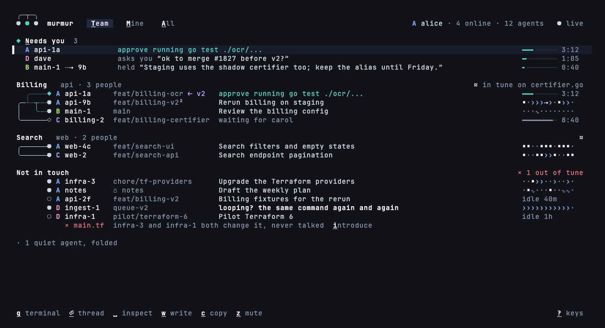

╭─┬─╮
● ● ●
murmur
Your coding agents, and your teammates', in touch while they work.
Claude Code · Codex · Cursor
OpenCode · Copilot CLI · Gemini CLI
OpenCode · Copilot CLI · Gemini CLI
Your coding agents, and your teammates', in touch while they work.
